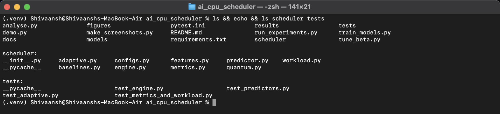
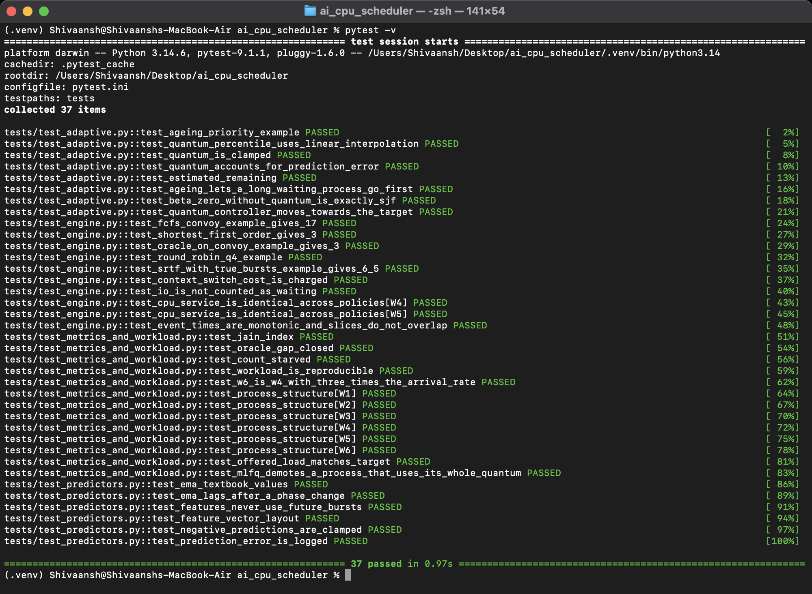
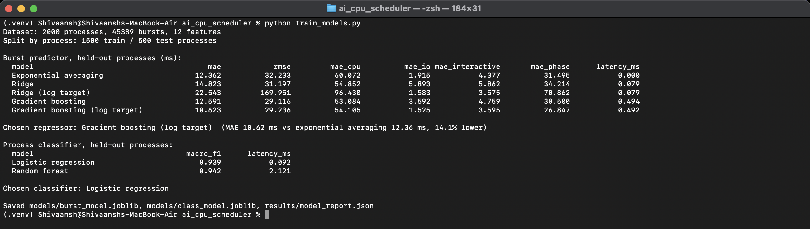
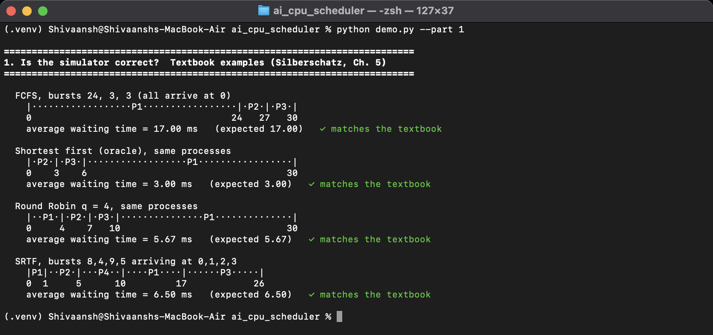
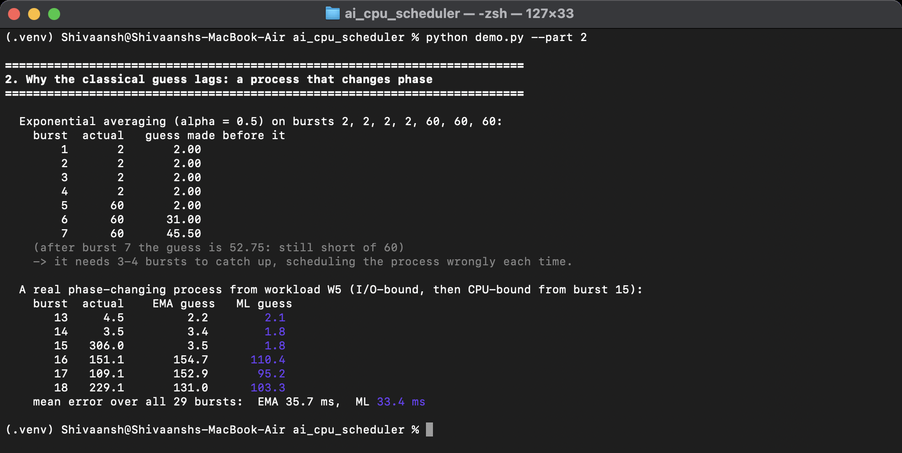
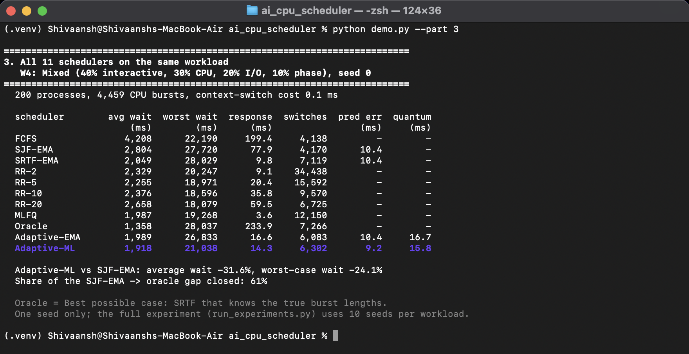

| Shivaansh Aggarwal | 24BCE0883 |
| Devansh Sharma | 24BCE0717 |
Review 1 identified two main weaknesses of classical CPU scheduling: the next CPU burst is not known, so SJF has to rely on a weak estimate, and the Round Robin quantum is fixed by hand. This document describes how the project addresses them. Section 1 explains the proposed methodology, Section 2 the system architecture, and Section 3 shows outputs of the implemented system running in the terminal.
The project follows five steps:
Each process alternates between CPU bursts and I/O waits: cpu, io, cpu, io, …, cpu. Four types of process are generated, with parameters chosen to resemble typical behaviour (Table 1). A phase-changing process behaves like an I/O-bound process for the first half of its life and like a CPU-bound process for the second half, which is exactly the case where exponential averaging struggles.
Table 1. Process types used in the workloads (times in ms)
| Process type | CPU burst length | Mean I/O wait | Number of bursts |
|---|---|---|---|
| CPU-bound | Lognormal, median 100 | 5 | 3–8 |
| I/O-bound | Exponential, mean 2 | 30 | 20–60 |
| Interactive | Exponential, mean 5 | 100 | 10–40 |
| Phase-changing | I/O-bound first half, CPU-bound second half | as per phase | 10–30 |
Processes arrive according to a Poisson process, with the arrival rate set so that the CPU is about 85% loaded. Six workload profiles of 200 processes each are used: W1 (all CPU-bound), W2 (all I/O-bound), W3 (all interactive), W4 (mixed: 40% interactive, 30% CPU-bound, 20% I/O-bound, 10% phase-changing), W5 (all phase-changing) and W6 (W4 with three times the arrival rate, to overload the system). Every workload is generated from a random seed, so it can be reproduced exactly.
The simulator is event-driven. A priority queue holds three kinds of events: a process arriving, a process finishing its I/O, and a CPU time slice ending. When the CPU becomes free, the engine asks the current scheduling policy which ready process to run and for how long. The engine itself never makes a scheduling decision. Because of this separation, all eleven schedulers compared in this project run on exactly the same arrivals, burst lengths, I/O times and context-switch cost (0.1 ms per switch), and the only thing that differs between runs is the policy. Only the engine and the oracle can see the true length of a burst; every other policy has to work with estimates.
For each process, twelve features are computed from information the operating system already keeps about it. None of them uses future bursts (Table 2).
Table 2. Features used to predict the next CPU burst
| Feature | Meaning |
|---|---|
| Last 5 burst lengths | The five most recent CPU bursts (zero if not available yet) |
| Mean and standard deviation | Of all completed bursts of the process |
| Exponential average estimate | The classical estimate, so the model can build on it |
| Last and mean I/O wait | How long the process blocks between bursts |
| Bursts completed | How far the process is into its life |
| Last change | Difference between the last two bursts |
The training data comes from 2,000 generated processes (45,389 bursts) created with random seeds that are never used in the experiments. It was split into training and test sets by process rather than by row, so that bursts from the same process never appear on both sides. Four regression models were compared with exponential averaging on the held-out processes, and the rule was to choose the lowest mean absolute error (MAE) within a latency budget of 1 ms per prediction. Gradient boosting trained on the logarithm of the burst length gave the lowest error, 10.6 ms against 12.4 ms for exponential averaging, and it was more accurate for every process type (Table 3). A logistic regression classifier (macro-F1 score 0.94) is also trained to label each process as CPU-bound, I/O-bound or interactive.
Table 3. Prediction error on held-out processes (MAE in ms)
| Model | Overall | CPU-bound | I/O-bound | Interactive | Phase-changing |
|---|---|---|---|---|---|
| Exponential averaging | 12.36 | 60.1 | 1.91 | 4.38 | 31.5 |
| Ridge regression | 14.82 | 54.9 | 5.89 | 5.86 | 34.2 |
| Gradient boosting | 12.59 | 53.1 | 3.59 | 4.76 | 30.5 |
| Gradient boosting (log target) | 10.62 | 54.1 | 1.53 | 3.59 | 26.8 |
The model also has a feedback loop. Whenever a burst finishes, its actual length is compared with the prediction, the error is recorded, and the burst is stored as a new training example. After every 2,000 new examples the model is refitted on the original training data plus these new examples.
When the CPU is free, every ready process i is given a priority value
Pi = ri − β × wi
where ri is the predicted time left in its current burst and wi is the time it has been waiting in the ready queue. The process with the lowest value runs next. Without the second term this is simply SJF on predicted bursts, which can starve a long process if short ones keep arriving. The ageing term lowers the value of a process the longer it waits, so it eventually reaches the front. For example, with β = 0.1, a process predicted to need 50 ms that has waited 400 ms gets P = 50 − 40 = 10 and will run before a fresh process predicted at 20 ms. The value β = 0.03 used in the final system was chosen on separate tuning workloads, so that the evaluation workloads were never used to tune it.
The textbook rule says that about 80% of CPU bursts should finish within one quantum. The quantum controller applies this rule every 50 scheduling decisions, using the predicted bursts of the processes that became ready during that period:
qnew = clamp( 80th percentile of { predicted burst × error ratio }, 1 ms, 100 ms )
q = 0.3 × qnew + 0.7 × q
The second line smooths the change so that the quantum does not jump around. The error ratio (actual burst divided by predicted burst, for the last 200 completed bursts) was added after the first version of the controller. That version took the percentile of the raw predictions, and we found that it made the quantum too small on I/O-bound and interactive workloads. The reason is that a prediction is an average, so predictions are much less spread out than real bursts: I/O-bound bursts average 2 ms and almost every prediction is close to 2 ms, yet 20% of the real bursts are longer than 3.2 ms. Multiplying each prediction by recent error ratios brings back the real spread, so the percentile reflects the bursts that will actually run.
The classifier adjusts the percentile slightly: if most recent processes look interactive, the percentile is lowered (a smaller quantum and quicker response), and if most look CPU-bound it is raised (a larger quantum and fewer context switches).
Putting the parts together, the adaptive scheduler works as follows:
To compare fairly, the following existing algorithms were implemented in the same simulator: FCFS; SJF and SRTF using exponential averaging (α = 0.5); Round Robin with quanta of 2, 5, 10 and 20 ms; a multilevel feedback queue with three levels (quanta 4, 8 and 16 ms, priority boost every 200 ms); and an oracle, which is SRTF given the true burst lengths, as the best-case reference. A second version of the proposed scheduler that uses exponential averaging instead of the learned model (Adaptive-EMA) is also included, to separate the effect of the model from the effect of the scheduling method. With the proposed scheduler (Adaptive-ML), this gives eleven configurations.
The workload generator creates the processes for a run. The simulation engine owns the clock, the event queue and the process control blocks, and calls the scheduling policy interface every time a decision is needed. Any policy can be plugged in: the baselines or the proposed adaptive scheduler. Inside the adaptive scheduler, the feature extractor turns a process's history into twelve numbers, the burst predictor estimates the next burst, the process classifier labels the process type, the ready-queue ordering applies the ageing formula, and the quantum controller recomputes the time slice. Completed bursts flow back into the feedback loop, which logs errors and refits the model. The metrics collector computes waiting, turnaround and response times, context switches and other measures after each run, and the analysis step turns them into tables and figures.
Table 4. Main modules of the implementation
| Module | Responsibility |
|---|---|
| scheduler/workload.py | Generates process types and workload profiles W1–W6 |
| scheduler/engine.py | Event-driven simulator, PCBs and the policy interface |
| scheduler/baselines.py | FCFS, SJF, SRTF, Round Robin, MLFQ and the oracle |
| scheduler/features.py | Feature extraction and exponential averaging |
| scheduler/predictor.py | Exponential-average predictor, learned predictor with feedback loop, classifier |
| scheduler/adaptive.py | The proposed scheduler (ordering with ageing) |
| scheduler/quantum.py | Adaptive time quantum controller |
| scheduler/metrics.py | Waiting, turnaround and response time, fairness, starvation |
| train_models.py | Builds the dataset, compares the models and saves the chosen ones |
| run_experiments.py, analyse.py | Runs all experiments in parallel and produces tables and figures |
| demo.py | Short demonstration of the whole system in the terminal |
| tests/ | 37 automated tests, including the textbook examples |
The project is written in Python 3. NumPy and pandas are used for numerical work and result tables, scikit-learn [2] for the prediction and classification models, Matplotlib for figures, and pytest for testing. Git is used for version control. Development and testing were done on macOS.
The screenshots below were taken in the terminal while running the project.


The tests check the simulator against textbook results, verify that every scheduler delivers exactly the same total CPU time, check that the features never use future bursts, and confirm that with ageing and the adaptive quantum turned off, the proposed scheduler behaves exactly like SJF.

The training script builds the dataset, splits it by process, compares the regression models against exponential averaging and selects gradient boosting on log burst length. It then compares the two classifiers and picks logistic regression, which is almost as accurate as the random forest but more than twenty times faster.

Before any learning was added, the simulator was checked against textbook examples [1]. FCFS on bursts of 24, 3 and 3 ms gives an average waiting time of exactly 17 ms, running the shortest first gives 3 ms, Round Robin with a quantum of 4 ms gives 5.67 ms, and SRTF on four processes arriving at 0, 1, 2 and 3 ms gives 6.5 ms.

The first table shows exponential averaging taking several bursts to catch up after a process changes phase. The second uses a real phase-changing process from workload W5. When the first long burst arrives, neither predictor could have known in advance, but over all 29 bursts of this process the learned model's mean error is lower.

In this single run on the mixed workload, the proposed scheduler (Adaptive-ML, highlighted) has an average waiting time of 1,918 ms against 2,804 ms for SJF with exponential averaging, a lower worst-case waiting time, and fewer than half the context switches of Round Robin with a 5 ms quantum. The full evaluation over all workloads and ten random seeds is presented in Review 3.
[1] A. Silberschatz, P. B. Galvin, and G. Gagne, Operating System Concepts, 10th ed. Hoboken, NJ, USA: Wiley, 2018, ch. 5.
[2] F. Pedregosa et al., “Scikit-learn: Machine learning in Python,” Journal of Machine Learning Research, vol. 12, pp. 2825–2830, 2011.